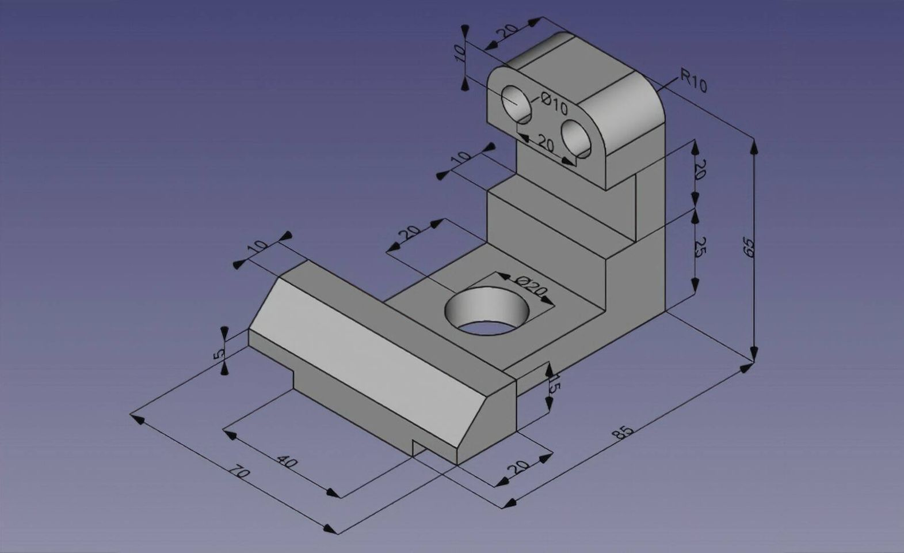

Giới Thiệu Chung
cadcamcn.tk là một dự án phi lợi nhuận do các thành viên của group Cad Cam Cnc Đà Nẵng Miền Trung tạo ra
Chúng tôi mong muốn mang đến một nơi cung cấp đầy đũ những tư liệu quan trong trong ngành thiết kế-chế tạo máy cũng như nhiều ứng dụng khác của công nghệ Cad Cam Cnc.
Mục tiêu của chúng tôi khi tạo ra website này cụ thể như sau:
Tạo ra một nơi cung cấp nguồn dữ liệu chuyên ngành phong phú và một cách có hệ thống cho đồng nghiệp xa gần đang học tập và làm việc liên quan đến CAD CAM CNC
Nơi chúng tôi chia sẽ những MẸO NHỎ -KINH NGHIỆM HAY -trong suốt quá trình làm việc của mình đến những người cần tìm kiếm và học hỏi
Nơi đăng tải những bài viết hay-những hướng dẫn bổ ích từ quý bạn đọc-đồng nghiệp xa gần
------Tiêu chí của chúng tôi:chia sẽ và miễn phí-CHO ĐI CHÍNH LÀ NHẬN LẠI---------
